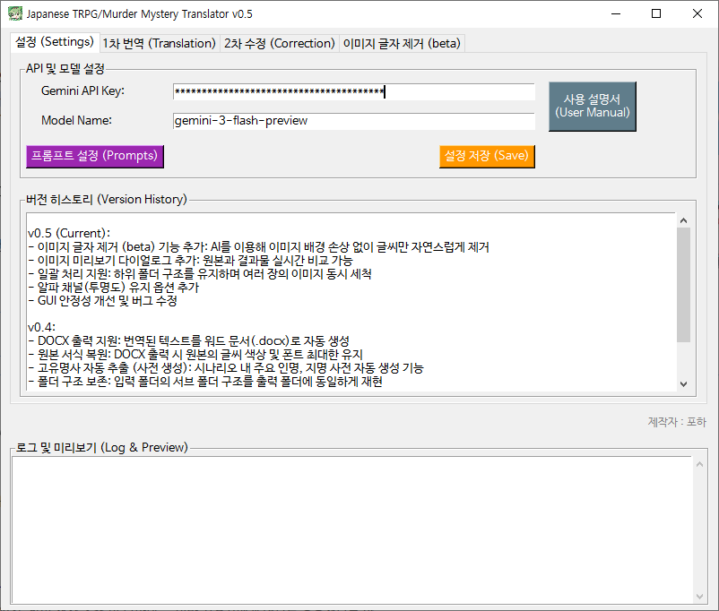
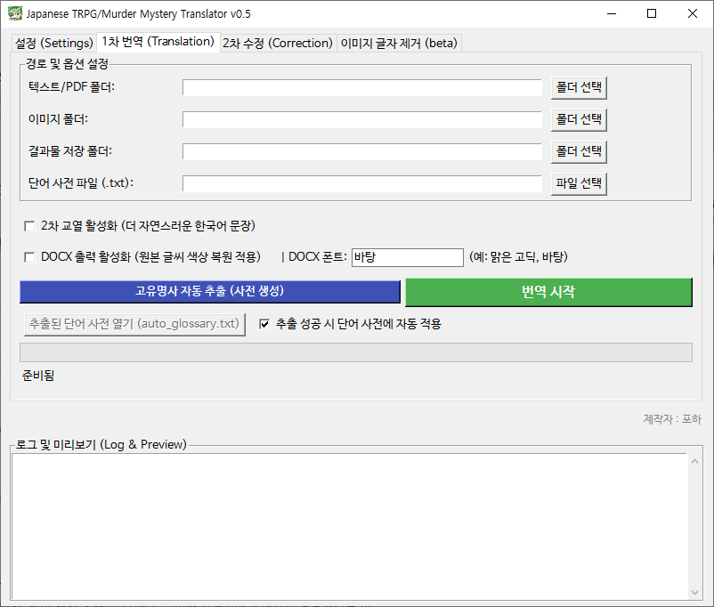
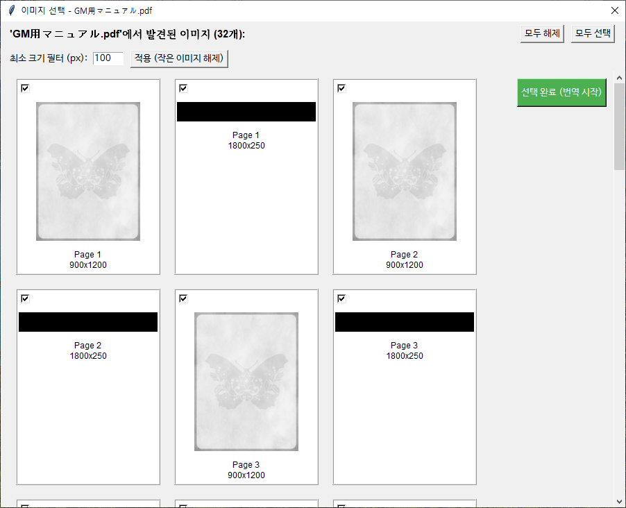
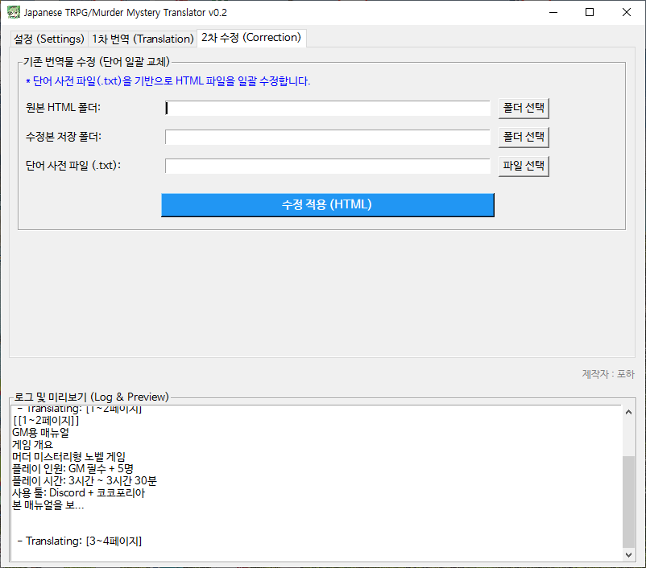
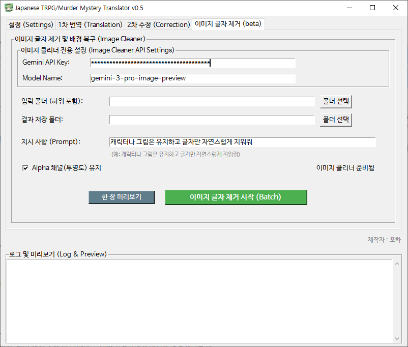
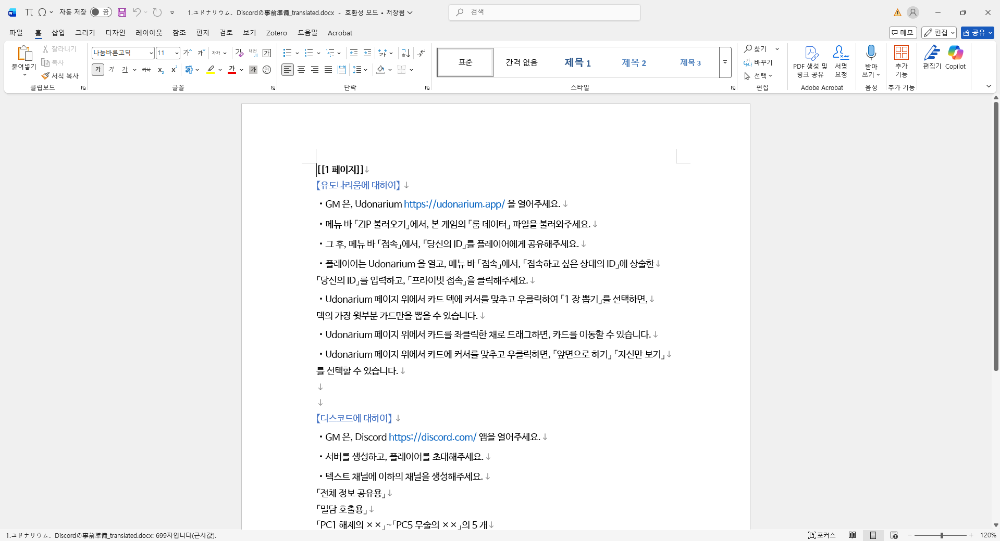

TRPG/Murder Mystery Translator 사용 설명서
환영합니다! 이 프로그램은 일본어 TRPG 시나리오 및 머더 미스터리 텍스트를 한국어로 자연스럽게 번역하고 교정하는 도구입니다.
1. 시작하기 (Settings)
- API Key 입력: Google Gemini API Key를 입력하세요. (최초 1회 저장 필요)
- Model Name: 기본값은
gemini-3-flash-preview입니다. 필요 시 변경 가능합니다. - 버전 정보 확인: '버전 정보' 버튼을 클릭하면 v0.5까지의 최신 패치 노트를 확인할 수 있습니다.
다른 모델 리스트는 Google AI 공식
문서에서 확인하실 수 있습니다.

[그림 1] 설정 탭 및 패치 노트 화면
2. 1차 번역 (Translation)
일본어 원문 텍스트 파일이나 이미지를 번역합니다. v0.4부터는 워드 문서 출력 및 자동 용어 추출 기능이 강화되었습니다.
- 텍스트 폴더:
.pdf,.txt파일들이 들어있는 폴더를 선택하세요. - 이미지 폴더:
.png,.jpg이미지가 있는 폴더를 선택하세요. (OCR 번역) - 용어집 추출 (New v0.4): 번역 시작 전 이 버튼을 누르면 AI가 시나리오 전체를 스캔하여 주요 인명, 지명 등을
원문:역문형태로 자동 추출합니다. 추출된 내용은auto_glossary.txt로 저장되며 자동으로 용어집 경로에 설정됩니다. - 용어집 (Glossary): 추출된 사전이나 직접 만든 사전 파일을 등록하면 번역 시 해당 용어가 우선 적용됩니다.
- DOCX 출력 활성화: 체크 시 HTML 결과물 외에도 워드 문서(
.docx)가 생성됩니다.
(※ 원본의 글자 색상을 보존하려면 반드시 DOCX 출력을 사용해야 합니다.) - 폰트 설정: DOCX 문서에 적용할 폰트를 직접 입력하거나 선택할 수 있습니다. (기본값: 바탕)

[그림 2] 1차 번역 상세 설정 및 용어집 추출 화면
3. PDF 이미지 선택 기능 (v0.3)
PDF 파일을 번역할 때, 필요한 이미지만 선택하여 번역 시간을 단축하고 결과물을 깔끔하게 만들 수 있습니다.

[그림 3] 이미지 선택 팝업 화면
4. 2차 교정 (Correction)
번역된 결과물을 AI가 다시 한번 검토하여 맞춤법과 문맥을 자연스럽게 다듬습니다.

[그림 4] 2차 교정 작업 화면
5. 이미지 글자 제거 (beta) (New v0.5)
AI를 이용하여 이미지의 배경을 보존하면서 글자만 깔끔하게 제거합니다. 타이틀 로고 제거나 배경 이미지 정리에 유용합니다.
- 지시 사항: 기본값 외에도 "캐릭터 얼굴은 건드리지 마" 등 구체적인 명령이 가능합니다.
- 한 장 미리보기: 실제 처리를 시작하기 전, 결과를 미리 비교해 볼 수 있습니다.
- 알파 채널 유지: 체크 시 투명 배경(PNG)이 포함된 이미지의 투명도를 그대로 보존합니다.

[그림 5] 이미지 글자 제거(beta) 탭 화면

[그림 6] 이미지 제거 전/후 미리보기 비교
6. 기타 편의 기능 (v0.4)
- DOCX 출력 상세: 번역된 텍스트를 워드 파일로 생성하며, 원본의 글씨 색상과 폰트 스타일을 최대한 보존하여 가독성을 높였습니다.
- 폴더 구조 보존: 입력 폴더 안에 여러 서브 폴더가 있어도, 출력 폴더에 동일한 계층 구조로 결과물을 깔끔하게 정리해줍니다.

[그림 7] DOCX 출력 결과물 예시 (글씨 색상 및 스타일 보존)
Tip:
output 폴더 내 결과물은 웹브라우저나 워드 프로세서로 열어 확인할 수 있습니다.
제작자 : 포하 (v0.5)